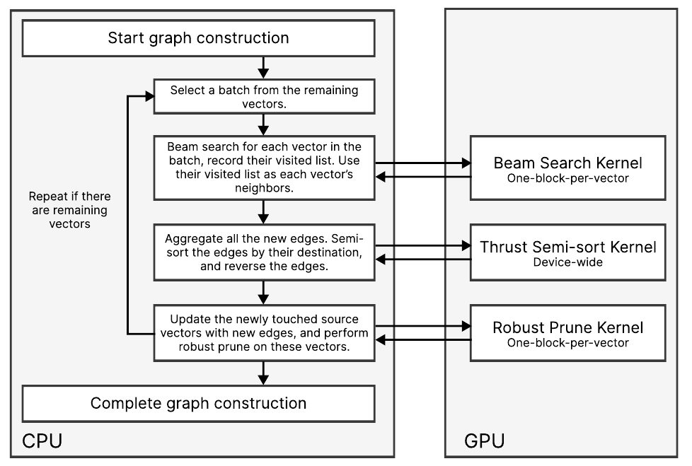

Jasper — GPU-Accelerated ANNS: Quantized for Speed, Built for Change

Jasper's batch-parallel graph construction pipeline
Abstract
Approximate nearest neighbor search (ANNS) is a core problem in machine learning and information retrieval. GPUs offer a promising path to high-performance ANNS through massive parallelism and co-location with downstream applications, but current GPU indices face three limitations: inability to update without full rebuilds, lack of efficient quantization for high-dimensional vectors, and poor latency hiding due to data-dependent memory accesses.
We present Jasper, a GPU-native ANNS system built on the Vamana graph index that achieves both high query throughput and full updatability via three new techniques: (1) a batch-parallel construction algorithm enabling lock-free streaming insertions, (2) a GPU-efficient RaBitQ implementation that reduces memory footprint up to 8× without random access penalties, and (3) an optimized search kernel with improved compute utilization and latency hiding.
Across five datasets, Jasper achieves up to 1.84× higher throughput than CAGRA, the current state-of-the-art GPU index, while providing updatability that CAGRA lacks, constructs indices 7.0× faster on average, and delivers 10–74× faster queries than BANG, the previous fastest GPU Vamana implementation.